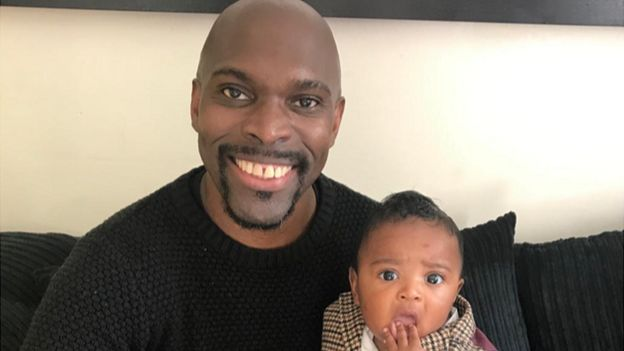
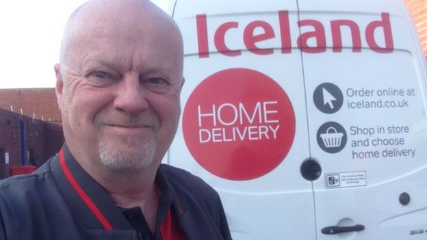
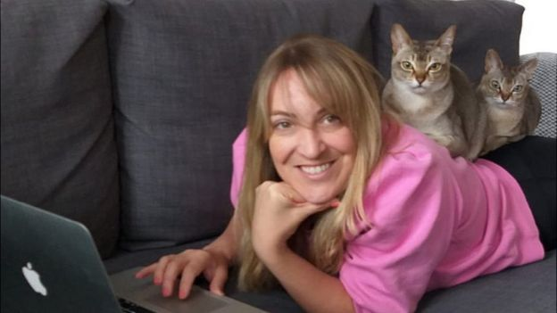

Katherine Densham has struggled to find work that matches her previous wage
Back in the springtime, when Covid-19 was tightening its grip on the UK, the BBC spoke to a number of people whose jobs were facing the axe as a result of the virus.
So how have they fared on the jobs front in the past six months? The BBC went back to talk to them to find out how they are getting on.
When Katherine Densham first spoke to the BBC at Exeter airport in early March, she was understandably upset.
The airline Flybe, her employer of 13 years, had just collapsed into administration. Cabin crew member Katherine and the good friends she'd made through work were being made redundant.
Flybe was described as one of the first corporate casualties of the coronavirus outbreak. A few weeks later, lockdown restrictions were brought in and vast swathes of the UK economy ground to a halt.
Half a year later, Katherine's job search continues. At Flybe, she worked part-time on set days. The youngest of her three children is only two and therefore not yet entitled to free childcare.
- How is furlough changing?
- Sunak defends emergency jobs scheme
- 'We have next to no income. There is no help for us'
- What jobs are available post-lockdown?
Finding something similar in her local area has seemed impossible.
You'd think I'd have transferrable skills, but no-one wants to take on part-time staff,
she says. A lot of the companies I looked at had halted recruitment, because they just didn't know what would happen.
Other jobs were minimum wage, meaning it would cost me more in childcare to return to work. I used to be well paid, it's hard to find anything on the same level without going back and retraining.
Her husband works in the hospitality sector. He was furloughed and has now returned to work. But Katherine is finding it hard to be optimistic about her situation.
I just feel really lost. I've started decorating the house to keep myself busy. The government keep saying about supporting young people, but what about people who aren't very young any more? I couldn't afford to go back to college to retrain now.
However, she adds: We can still pay the bills for now, so I feel lucky compared to a lot of people.
'Covid worries'
When Junior Stewart from Luton spoke to the BBC in April, he wasn't sure how he and his family would get by.
Previously self-employed, he'd recently got a job in sales. The idea was to provide a more stable income, with his wife expecting their third child. However, at the end of February, he was made redundant, having not been in the job long enough to be furloughed.
While I was looking for work, we were surviving on my wife's maternity pay and Universal Credit - which took more than five weeks to arrive and didn't cover our outgoings,
he says.
It was really difficult. Then when she returned to work and was furloughed, the UC disappeared.
He adds: People did approach me on LinkedIn about work and I had a few final-stage interviews. It felt like employers were being hesitant, they didn't know what would happen: one employer pulled a job I'd applied for.
Perhaps I could have got a job delivering pizzas, but with a young baby at home, I was worried about catching Covid.
By July, he had decided to learn new skills in the hope of pursuing his own new business venture.
I took an online course and gained a diploma in digital marketing, with a distinction. I don't think I can put my eggs in one basket by relying on an employer,
he says.
He's now planning to launch an internet marketing training business, in the hope of helping others start their own online enterprises. I want to help people who are unemployed have something else.
'Consistent hours'
Data from the Office for National Statistics suggests some 695,000 UK workers have disappeared from the payrolls of British companies since March, when the coronavirus lockdown began. The unemployment rate grew to 4.1% in the three months to July.
But not all industries have shed jobs. For example, firms which offer delivery services, such as Amazon and Tesco, have recruited more
David Davies from Runcorn has been a driving instructor for 16 years. The lockdown shut the door on my income,
he says.
Given his driving experience, he looked around for supermarket delivery jobs. After a few weeks, he found one with Iceland.
It was still quite hard to get, but I started with Iceland in April. It was initially on a zero-hours basis and I now have a permanent 7.5 hour contract. But I have consistently got over 20 hours a week.
It's been hard work, but I've really enjoyed it. Even now I have been able to give driving lessons again, there's no way I'm giving up the Iceland job.
Everything's so uncertain, especially because our area was on the latest list for new coronavirus restrictions. And although it was initially a matter of necessity, I've actually enjoyed having both jobs.
'Challenging times ahead'
Sian Melonie was interviewed by the BBC in May. Her contract for a large cinema group hadn't been renewed and she did not qualify for the Self-Employed Income Support scheme.
With a recruitment freeze in place, Sian doesn't expect it to be extended. It feels like it's come about too soon and I'm back where I was in April,
she says.
It's déjà vu: I'll be unemployed and there are challenging times ahead again, with further restrictions coming in. But I'll ask the agency to find another contract. I am trying to stay positive.
The uncertainty over her income and her relationship ending means Sian has decided to give up her current rented flat.
I'm weighing up my options. I don't want to be forced to move back home, that would feel like a real step back. This has all reinforced my view that it's important to have savings for times like these.